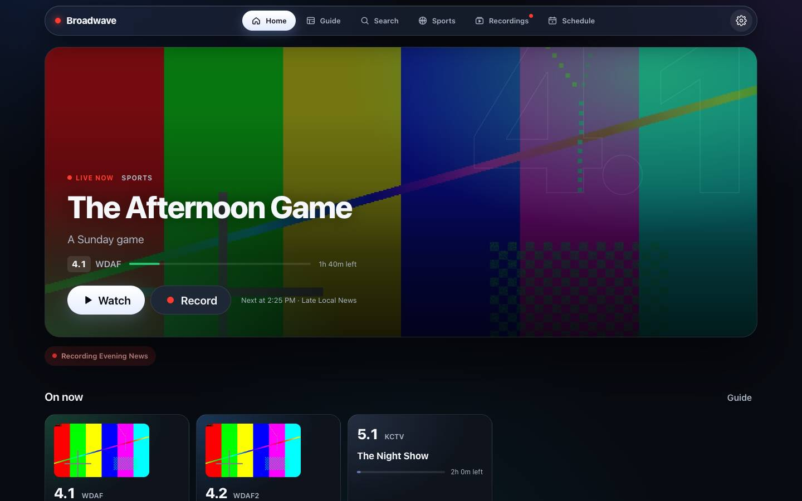
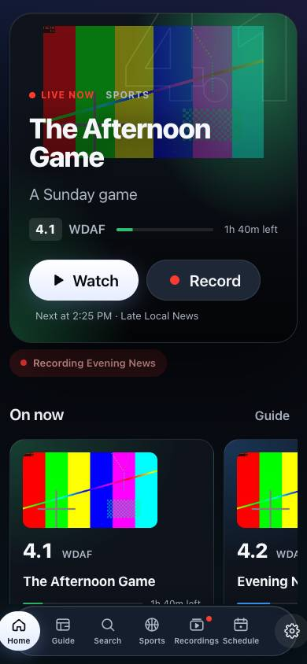
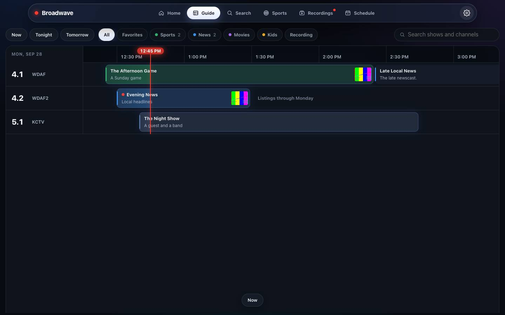
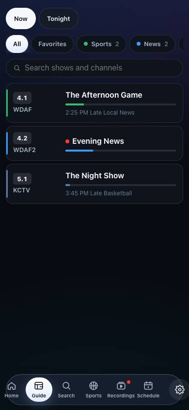
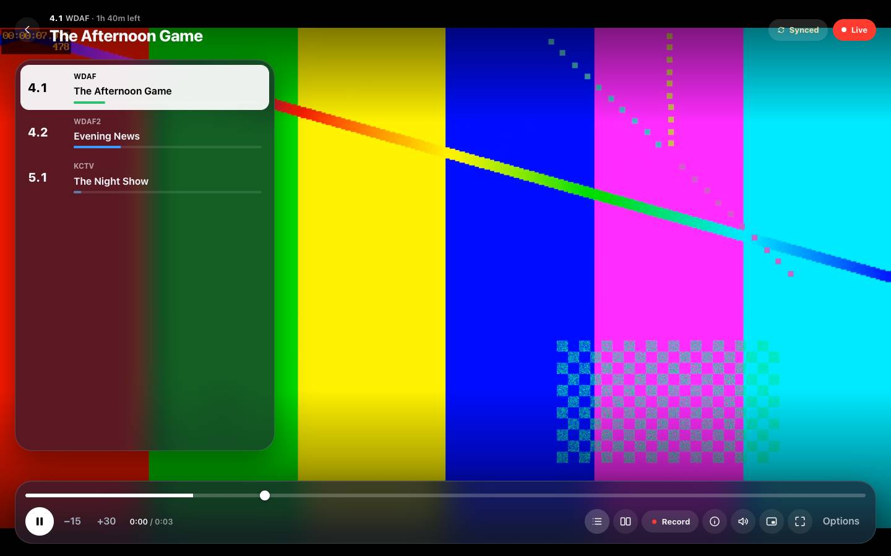
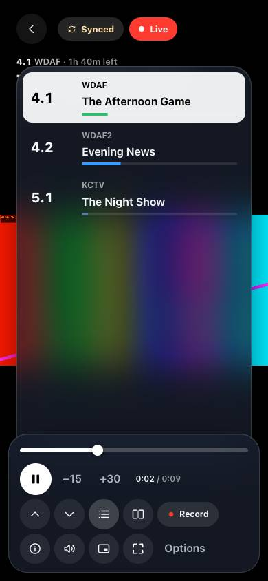
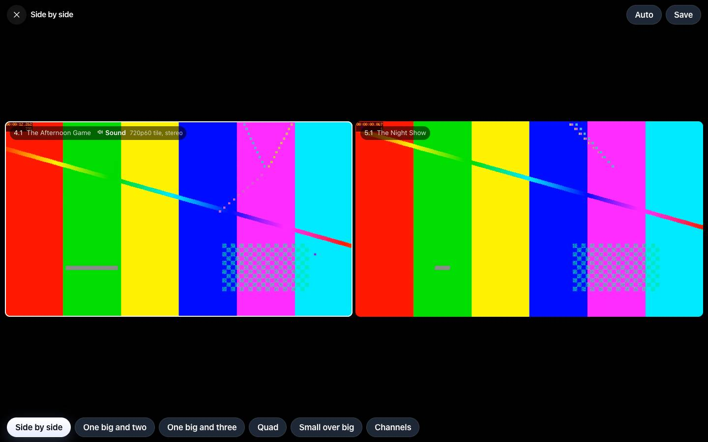
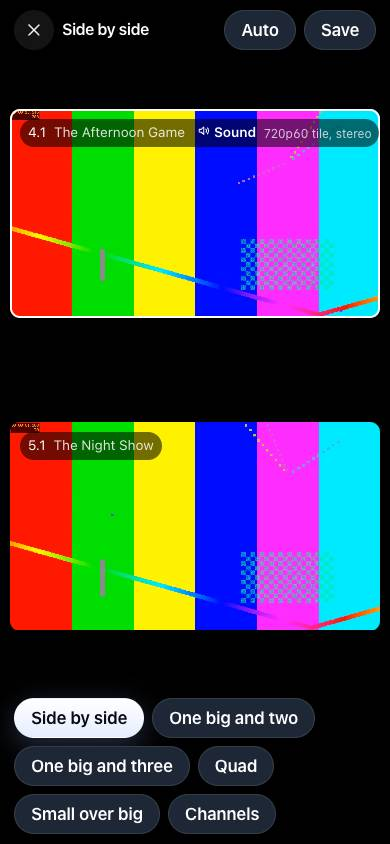
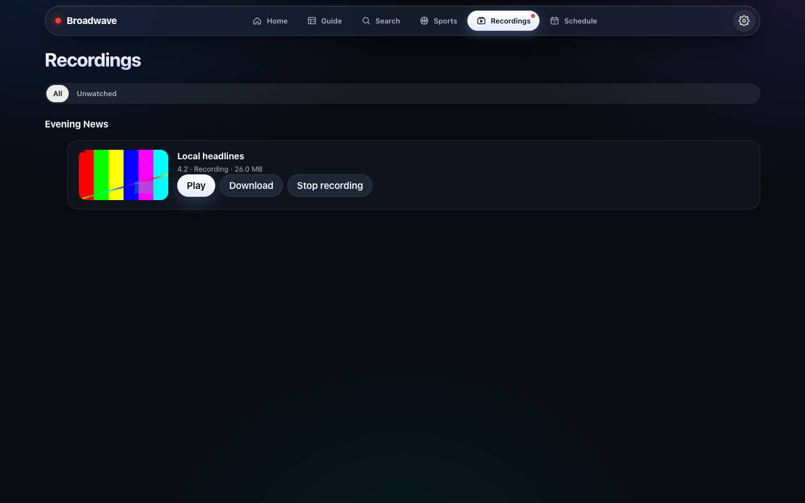
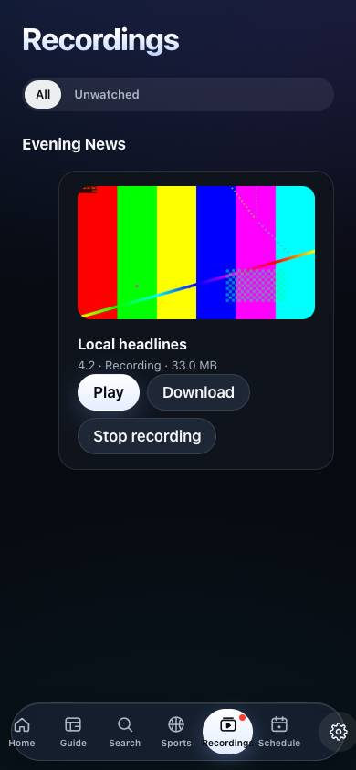

Your antenna already pulls in dozens of channels for free.
Broadwave puts them on every screen in your house — live, recorded, and perfectly in sync.
Plug an antenna into a network tuner, run Broadwave on any always-on box, and every phone, tablet, TV, and browser in the house becomes a TV. No cable bill. No streaming subscription. No account. Just the broadcasts that are already in the air.
The picture here is a test pattern.


Everything it does
Three people watching the game in three rooms use one tuner, not three — and the kitchen never cheers three seconds before the living room.
- Watch
- Live TV on every screen, in sync. One tune shared by everyone on a channel. True 60 fps, film restored to 24p. Hardware transcoding on Intel and AMD graphics. 5.1 surround with a picker for languages and described video. Buffers tuned for phones, desktops, and TVs. A stream panel that shows exactly what's happening.
- Record
- Shows, series, or every game for your team. The untouched broadcast, in original quality. Games keep recording until they're final. A tuner held back for recordings. A heads-up before live TV would take a recording's tuner. A later airing suggested when one can't record. Nightly backups with one-tap restore.
- Guide
- Up to 14 days of listings. Guide data from your tuner's provider, Schedules Direct, XMLTV, or the broadcast itself. Artwork, seasons, premieres, and finales. Search across the guide and your recordings. Antenna and signal tools that say Great, OK, Weak, or Lost.
- Multiview
- Side by side, one-big-plus-three, quad, and picture-in-picture. Sound and 60 fps follow the tile you pick. A Game Switcher that moves the big tile to the game that matters. Saved layouts.
- Sports
- Live scores for twelve leagues. Follow teams and record every game. Spoiler-safe scores you can hide.
- Setup
- Finds your tuners, servers, and screens on its own. Done in about 90 seconds. A setup doctor for networking, graphics, disks, time zone, and permissions. A banner when a new device shows up.
- Private
- No account, no ads, no analytics. Everything stays on your server. Support bundles with secrets stripped out. Open source, Apache 2.0.
What it looks like
The guide, live TV, and recordings. The phone uses the same server.








Install in one command
You need an always-on computer that runs Docker — a NAS, a mini PC, or a home server — and a network TV tuner. The image runs on x86-64 and ARM64. The tag latest is the newest release. It moves when a version is published. A full version tag from the releases page stays on that build.
Docker
docker run -d --name broadwave --network host --restart unless-stopped \
-e TZ=America/Chicago \
-v ~/broadwave:/config \
-v ~/broadwave/recordings:/config/work/recordings \
ghcr.io/wolfebase/broadwave:latest Then open http://<your-server>:8477. On a Linux server, Broadwave finds your tuner, scans your channels, and fills the guide on its own. Three TVs on the same channel use one tuner. Config and recordings stay in the folders you mounted, so an update keeps them.
--network hostlets a Linux server hear your tuner, and lets phones and TVs find Broadwave. Keep it there.- Graphics. Add
--device /dev/driwhen that path exists (Intel or AMD). Docker refuses to start if the path is missing. The picture still plays without it. TZis your time zone, so the guide lines up.- Tuner address. When the tuner does not appear, enter its address on the setup page, or set
HDHR_HOSTto that address. Add:portonly when it is not 80.
Mac
On Docker Desktop for Mac and Windows, the container's host network is a virtual machine. Publish the port and set HDHR_HOST to the tuner's address:
docker run -d --name broadwave --restart unless-stopped \
-e TZ=America/Chicago \
-e HDHR_HOST=<tuner address> \
-p 8477:8477 \
-v ~/broadwave:/config \
-v ~/broadwave/recordings:/config/work/recordings \
ghcr.io/wolfebase/broadwave:latest Then open http://localhost:8477.
Docker Compose
curl -fsSLO https://raw.githubusercontent.com/wolfebase/broadwave/main/deploy/docker/compose.yaml
docker compose pull && docker compose up -dSet TZ in compose.yaml first. That file uses host networking, which is right on Linux. On Docker Desktop, use the published-port command above. Remove the devices lines when /dev/dri is missing — Docker will not start while they point at a path that is not there. On Unraid, leave PUID at 99 and PGID at 100.
Image options
One image, ghcr.io/wolfebase/broadwave, for x86-64 and ARM64. It carries its own ffmpeg (jellyfin-ffmpeg 7), so nothing else needs installing.
TZ- Your time zone, such as
America/New_York. Without it the server runs on UTC. PUID,PGID- The user and group that own the config folder and recordings. Broadwave starts as root, hands the config folder to them, and then runs as them. Leave them out to run as root.
UMASK- Permissions for new files, such as
002so the group can write. Default022. HDHR_HOST- The tuner's address, when discovery can't reach it.
BROADWAVE_ENCODERgpuorsoftwareto skip the automatic choice.
Graphics, for smoother transcoding:
- Intel or AMD (VAAPI).
--device /dev/dri. Broadwave keeps access to the device when it switches toPUIDandPGID. - NVIDIA (NVENC). Install the NVIDIA Container Toolkit on the host, then add
--gpus all(or--runtime=nvidia -e NVIDIA_VISIBLE_DEVICES=all). The image already asks for the video driver capability. On Unraid, add--runtime=nvidiato Extra Parameters and setNVIDIA_VISIBLE_DEVICESto the card's UUID. NVIDIA has not been tested on real hardware yet. - None. The picture comes from the processor. Diagnostics says how many screens it can serve.
Docker's health check runs broadwave -healthcheck every 30 seconds, so docker ps shows healthy once the server answers.
Automatic updates (optional)
Broadwave can keep itself on the newest release. An updater checks every night at 03:30 and updates only Broadwave. It follows the tag the container already uses, so latest moves forward and a full version tag stays put. It skips a night while someone is watching, a recording is running, or a recording starts within two hours.
- Docker Compose:
docker compose --profile updater up -d. Set itsTZto match Broadwave. - Unraid: install the Broadwave template (it carries the labels the updater reads), then add the Broadwave-Updater template from deploy/unraid/broadwave-updater.xml. After an update, the Docker tab can still say an update is ready until it checks again.
- Plain
docker run: add--label com.centurylinklabs.watchtower.enable=true --label "com.centurylinklabs.watchtower.lifecycle.pre-update=broadwave -update-check"to the Broadwave command, and runnickfedor/watchtower:1withWATCHTOWER_LABEL_ENABLE=true,WATCHTOWER_LIFECYCLE_HOOKS=true, andWATCHTOWER_SCHEDULE="0 30 3 * * *".
To update by hand, pull the new image and recreate the container with the same folders. The folders stay; only the container is replaced. With Compose, docker compose pull && docker compose up -d. On Unraid, apply the update from the Docker tab.
Without an updater, the web app says when a new release is out.
Unraid
Add the template deploy/unraid/broadwave.xml. It uses host networking and port 8477. Leave PUID at 99 and PGID at 100 so recordings are not owned by root. Set Config and Recordings to folders on your server, and remove /dev/dri when the server has no Intel or AMD graphics. A plain docker run on Unraid needs -e PUID=99 -e PGID=100 as well.
Build from source
You need Go 1.26+, Node 22+, and ffmpeg.
make run # build the web app and run the server on :8477 with ./data
make dev # API with CORS for Vite; then: cd web && npm run dev
make testServer flags: -addr :8477, -config data, -hdhr <tuner address> (or HDHR_HOST).
Watch on
- Any browser at
http://<your-server>:8477— live TV, the guide, recordings, and multiview. Nothing to install. - Native apps for phones, tablets, and TVs find your server on the same Wi-Fi by themselves — no typing. With no server around, they play a built-in demo so you can try everything first.
The source is on GitHub. Apache 2.0.